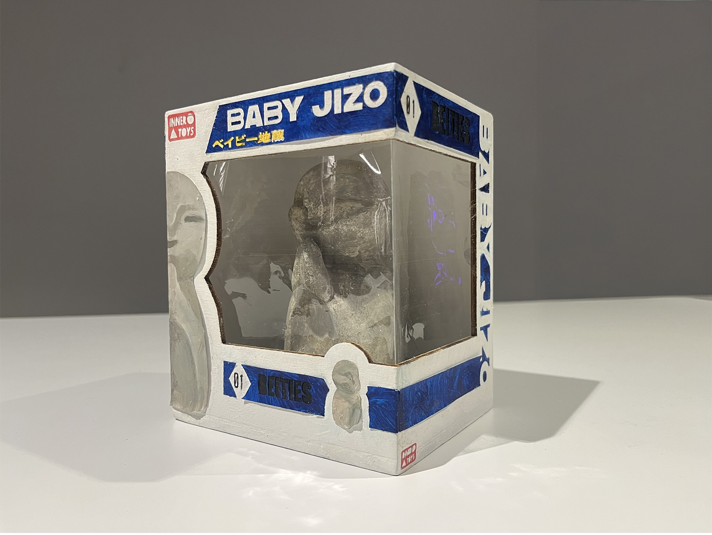
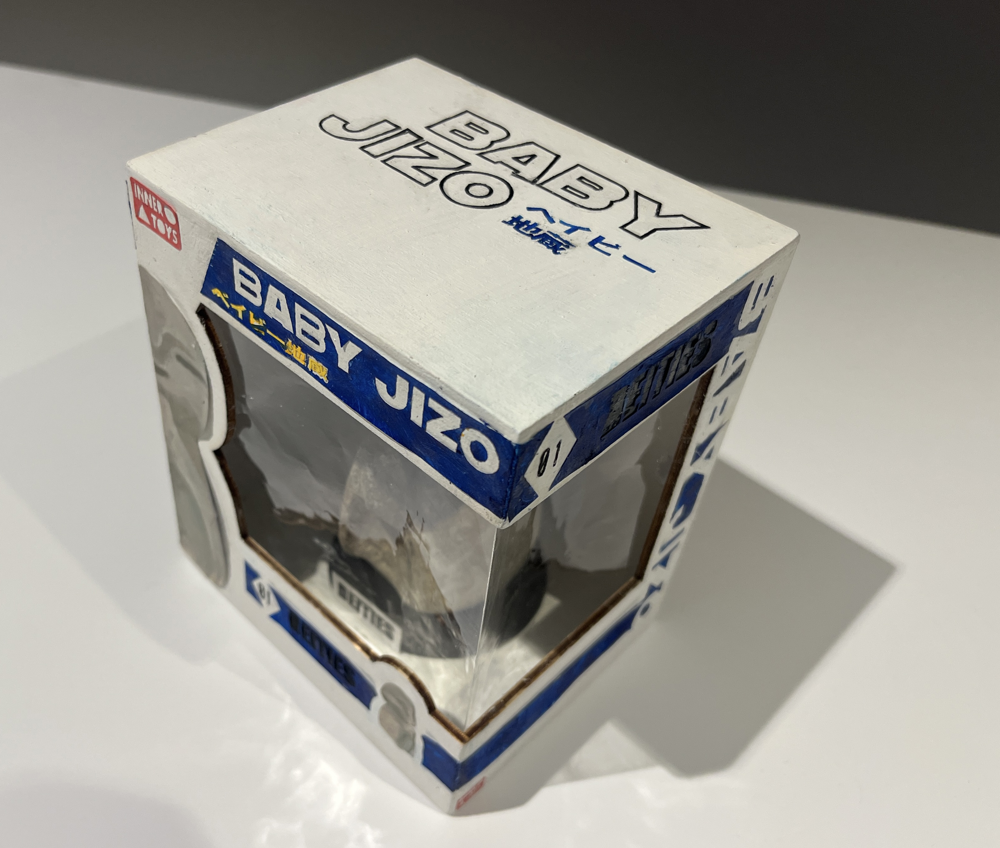
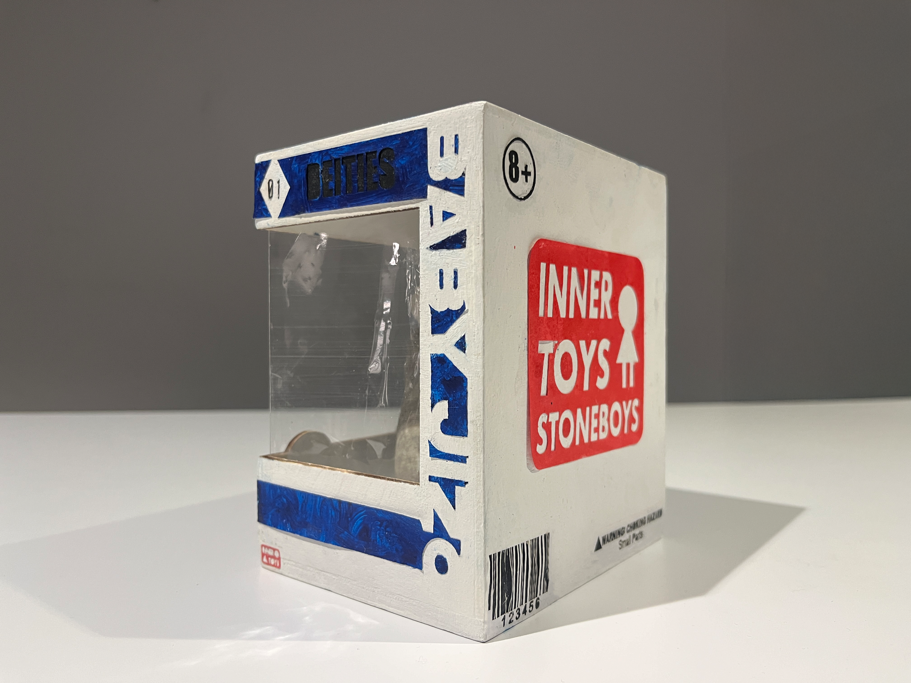

Concept
This is a sculpture I made of a collectible figurine and its box. The figurine itself is a Baby Jizo, a traditional Japanese deity often found in the form of stone statues at temples. People offer flowers, beads, or coins to Jizo as a gesture of protection and luck—especially for children. I was interested in what happens when this kind of spiritual figure is reimagined as a toy. For me, the act of cherishing, packaging, and caring for a toy can become a form of worship. Just like offerings placed at a shrine, the way we interact with the things we own—how we display them, preserve them, or play with them—can reflect a deep, personal sense of meaning.


Process


The Baby Jizo figurine started as a hand-sculpted clay statue. I took photos of the sculpture on my phone and used them to create a 3D-printed version, which I then painted to resemble stone—bringing it back to its original materiality in a new form. The base of the box was made using CNC-cut wood, while the sides were laser-cut and hand-assembled. I designed the packaging digitally, then laser-cut the text from paper, painted each piece, and glued them onto the box